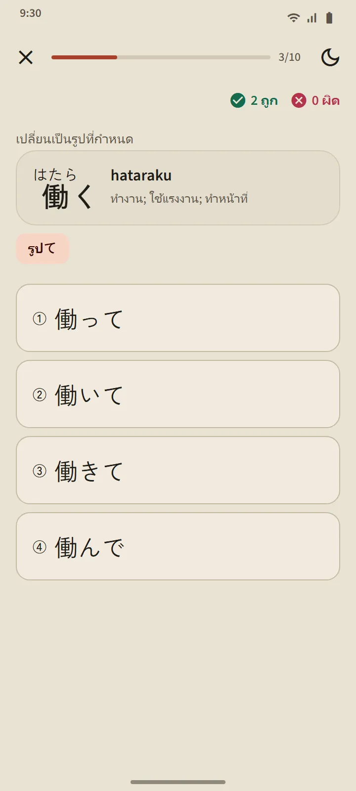
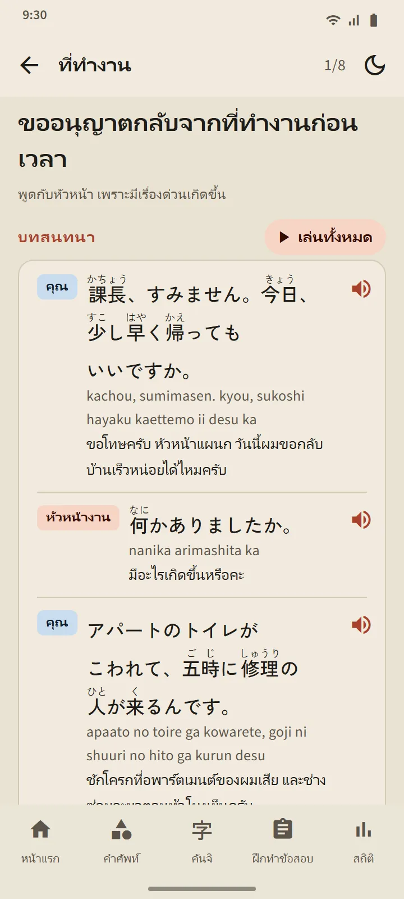

ห้าระดับ 268 บทเรียน
หน้าไวยากรณ์เปิดจากส่วน "พื้นฐานภาษาญี่ปุ่น" ในหน้าแรก ชิปด้านบนสลับระหว่าง N5 N4 N3 N2 และ N1 บทต่างๆ ขยายในที่ และแต่ละบทเรียนมีเครื่องหมายว่ายังไม่เปิด อ่านแล้ว หรือผ่านแบบฝึกหัดแล้ว N5 ครอบคลุมทุกรูปประโยคในข้อสอบจำลอง N5 และ N3 ถึง N1 ครอบคลุมรูปที่ออกในข้อสอบจำลองของระดับนั้นๆ
| ระดับ | บทเรียน | การเข้าถึง |
|---|---|---|
| N5 | 122 | ฟรี |
| N4 | 56 | ฟรี |
| N3 | 25 | Premium |
| N2 | 26 | Premium |
| N1 | 39 | Premium |

รูปแบบของบทเรียน
ทุกบทเรียนมีโครงเดียวกัน: รูปแบบประโยคและความหมาย วิธีสร้าง (สูตรพร้อมคำตัวอย่าง) คำอธิบาย ตัวอย่าง พร้อมฟุริงานะที่กดฟังได้ และ อย่าสับสนกับ สำหรับรูปแบบที่คล้ายกัน ประโยคญี่ปุ่นจะขึ้นบรรทัดใหม่เฉพาะระหว่างวลีเท่านั้น เพื่อให้อ่านง่ายบนโทรศัพท์จอเล็ก

แบบฝึกหัดพร้อมคำอธิบาย
ปุ่มที่ด้านล่างของบทเรียนเปิดแบบฝึกหัด 3 ถึง 5 ข้อ ทุกคำตอบมีคำอธิบาย บทเรียนนับว่าผ่านเมื่อตอบผิดไม่เกินหนึ่งข้อ และทำซ้ำบทที่ยังไม่ผ่านได้ ผลจะบันทึกไว้ในหน้าไวยากรณ์และแท็บสถิติ

ฝึกผันรูปคำและทบทวนรูปประโยค
ส่วนแบบฝึกในหน้าไวยากรณ์มีสองแบบฝึก ฝึกผันรูปคำ เปลี่ยนคำกริยา N5 เป็นรูป ます て ない รูปพจนานุกรม และ た แต่ละรูปจะเปิดเมื่อผ่านบทเรียนของรูปนั้น และทุกคำตอบอธิบายกฎ ทบทวนรูปประโยค ถามได้ถึง 10 ข้อจากบทเรียนที่ผ่านแล้ว บทที่ไม่ได้ทบทวนนานที่สุดมาก่อน ในการฝึกสอบ ข้อไวยากรณ์จะลิงก์ไปยังบทเรียนของตนผ่าน "เรียนรูปประโยคนี้"

สำนวนและบทสนทนา
บทสนทนาสั้น 78 บทใน 13 สถานการณ์: การแนะนำตัวและทักทาย การพูดคุยประจำวัน ที่ทำงาน ร้านค้า ร้านอาหาร สถานีรถไฟ โรงพยาบาลและร้านขายยา โทรศัพท์ หน่วยงานราชการ ธนาคารและไปรษณีย์ ที่พักและเพื่อนบ้าน เหตุฉุกเฉิน และสนามบิน แต่ละบทมีบทพูดพร้อมฟุริงานะ โรมาจิ และความหมาย ปุ่ม "เล่นทั้งหมด" ที่อ่านด้วยเสียงต่างกันสำหรับผู้พูดแต่ละคน สำนวนสำคัญ และแบบฝึกหัดสั้นๆ บทสนทนา 12 บทแรกใช้ได้ฟรี

ในภาษาของคุณ
คำอธิบาย ความหมายของตัวอย่าง ตัวเลือกคำตอบ และคำเฉลยมีใน 14 ภาษา: อังกฤษ อินโดนีเซีย เวียดนาม พม่า เนปาล ไทย สิงหล ฟิลิปปินส์ ฮินดี เบงกาลี มองโกเลีย เขมร เกาหลี และจีนตัวเต็ม ประโยคภาษาญี่ปุ่น สูตร และเฉลยเหมือนกันทุกภาษา บทเรียนเขียนขึ้นสำหรับ TokuGo แล้วผ่านการตรวจสอบ แหล่งข้อมูลเปิดใช้เพื่อตรวจทานเท่านั้น